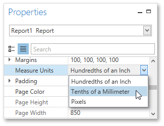

Change Measurement Units of a Report
For your report, you can choose its global Measure Units, which can be Hundredths of an Inch, Tenths of a Millimeter or Pixels.
To specify the Measure Unit property, do one of the following.
Right-click the report and select Edit... in the context menu. In the invoked dialog, set this property to the required value.

Select the report and switch to the Properties Panel. Expand the Measure Units drop-down and select the required value.

This defines the basic measurement unit for all the unit-related options of a report and its bands and controls (such as location, size, border width, etc.) as well as the measurement unit of the report's Snap Grid.